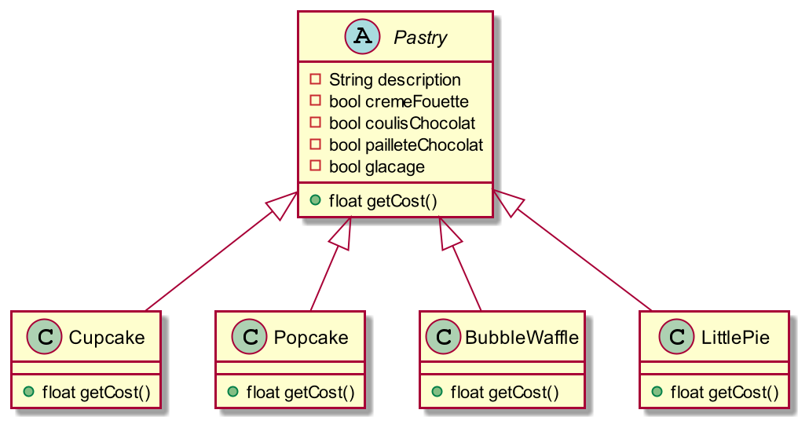

Les designs patterns
La vie d'un code

Le conte de fées
Il était une fois des :
- Besoins bien définis
- Une équipe de dev stable
- Des technologies figées
- Une application sans maintenance
La vrai vie
Besoin de s'adapter, d'avoir un code ouvert et lisible de tousMerci l'architecture
- Concept proposé pour les architectures de bâtiments (Christopher Alexander)
- Début d’application aux architectures logicielles en 1987 🧙♂️
- Visibilité publique en 1994 grâce au livre Ddsign patterns: elements of reusable object-oriented software (GoF)
- Redevient populaire suite à l'explosion du numérique et la diversité des profils des dev
Pourquoi 🤔
Validation qualitative des acquis et de la connaissance pratique- Vers une « ingénierie » (caractère systématique) du logiciel
- Faciliter la réutilisation de savoir faire
- Identifier, comprendre et appréhender des solutions récurrentes (e.g., API, framework existant)
Pourquoi 🤔
Indispensable pour
- Réutiliser / étendre / tester l’existant
- Construire de nouveaux systèmes logiciels
Réutilisation ♻
Les langages informatiques modernes orientés objet permettent la réutilisation
- par importation de classes
- par héritage : extension / spécialisation
- par l'inversion de contrôle (aspects)
DP in a nutshell 🥜
- Un fragment d’architecture à objets
- Une solution « classique » à un problème fréquent
- Une solution indépendante des algorithmes
- Une solution qui découple les différents problèmes et leurs différentes réponses
Décorateur
Ou comment générer des cupcakes

Le besoin
La patisserie Sugarcube Corner veut diversifier son offre de petit gateau à emporter. Voilà ce qu'elle souhaite proposer :
- Une patisserie de base : cupcake, popcake, bubble waffle, mini tarte
- Des suppléments : glaçage, paillette chocolat, coulis, crème fouettée
Comment faire cela ?
Solution 1
On créer une classe pour chaque combinaison
Définition de l'enfer sur Terre
Solution 2
Super classe avec toutes les variables
Des problèmes ?
- Changer le prix d'un topping demande de changer le code existant
- Nouveau topping demande de changer le code existant
- Nouvelles patisseries pas forcément compatibles avec tout les toppings
- Si on faut un double nappage chocolat ?
Open/Close principle
Une classe doit être ouverte à l'extension mais fermé à la modification
Pour ajouter une fonctionnalité on doit seulement ajouter du nouveau code mais pas en modifier de l'ancien
Impossible à faire dans 100% des cas il faut arbitrer 🙃
Des idées ?
Prenez 20 min pour coder une solutionLe pattern decorator

Let's code
Utiliser ce pattern pour résoudre le problèmeUn exemple java.io

Un exemple java.io
Créez trois nouveau java I/O decorator- Un qui retourne un texte tout en minuscule
- Un qui retourne un texte tout en majuscule
- Un qui applique un codage cesar dessus
Les factory
Ou comment cuisiner des pizzas

Le besoin
Vous êtes en train de monter votre système de vente en ligne de pizza. Lorsque l'utilisateur clique sur une pizza vous allez générer un objet pizza dans votre SI.
Implémentez une classe PizzaStore qui permet de créer des pizzas selon un paramètre passé. Vous utiliserez le fichier Pizza base code disponible sur Moodle
Un code stable ?
- Que ce passe-t-il si on change le menu ?
- Que ce passe-t-il si on a besoin de créer des pizzas ailleurs ?
🤔 Des idées ? 💡
Simple Factory Pattern
Externalise la création des pizzas dans une autre classe

Simple Factory Pattern
Mettez à jour votre code pour implémentez ce pattern
Checkpoint
On essaye au maximum de cacher l'utilisation de new
- new = un objet concret, source de couplage
- Si choix on veut centraliser code
- Déléguer la responsabilité à la bonne personne
Des franchises
Comment créer plusieurs pizzerias, chacun avec ses spécificités ?
- Par héritage
- Par composition
Choisissez une solution et mettez la en place
Des franchises
Avantages et inconvénients des deux solutions ?The factory method

In a nutshell 🥜
Le patron Factory Method défini une interface pour créer des objets, mais laisse les classes enfants définir comment les instancier. Factory Method permet de déléguer l'instanciation aux classes enfantsDiagramme pur

☯ Inversion de dépendance
Dépendre des abstractions et non des implémentations concrètesSingleton
Un objet pour les gouverner tous
Réfléchissons ensemble
Comment créer une classe avec une seule instance ?
- Comment créez vous une instance ?
- Comment définissez vous un constructeur ?
- Quelle est la visibilité du constructeur ?
- Comment instancier un objet unique à partir de là ?
Singleton Pattern

Implémentez un singleton, et tester que vous ne pouvez pas créer plusieurs instances
Un peu de multithreading
2 objets java
- (Interface) Runnable : définit le comportement (méthode run)
- (Classe) Thread : contient un runnable et permet de le gérer
Multithreading et singleton
Créez de manière simultané plusieurs singletons voir ce qu'il se passe
Thread Safe singleton
Mot clef synchronizedSingleton use case
Gestion de ressources coûteuses ou que l'on ne veut pas dupliquer inutilement
- Connexion à une base de donnée
- Des simples factory
- La gestion du cache
- La gestion des loggers
Singleton use case
Dans la vraie vous allez rarement faire un singleton vous même, mais utiliser des frameworks pour.
Mais savoir comment cela fonctionne est toujours intéressant intellectuellement.
Command Pattern
Une API pour controller plusieurs éléments différents
Le contexte
- Récupérer le code sur Moodle
- Comment contrôler facilement tous les appareils ?
Encapsuler le contrôle
Le commande Pattern encapsule une requête comme un objet, ce qui permet de créer plusieurs requêtes pour différents objets mais en ayant pour tous une interface communeCommand Pattern

Le cas du multi threading
- Runnable est la Command
- Les classe qui en hérite sont les ConcreteCommands
- Un thread est l'Invoker
- Les objets modifiés sont les receivers
To do
- Créez une classe/interface Command
- Receiver = light, garage door, stereo etc
- Créez des commandes concrètes on/off pour chaque receiver (limitez vous à 3)
- Invoker = une télécommande qui stock les commandes (commencez avec une)
- Client = une classe qui voit les receiver, et qui communique avec eux via l'invoker
To do 2
- Comment faire une télécommande avec plusieurs commande ?
- Comment faire un undo ?
- Possibilité de limiter le nombre de classe ?